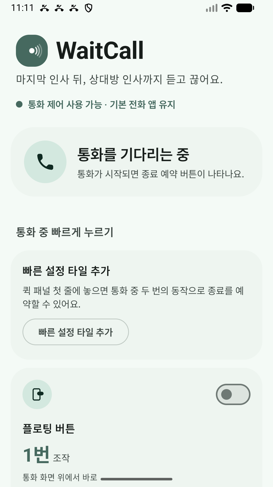
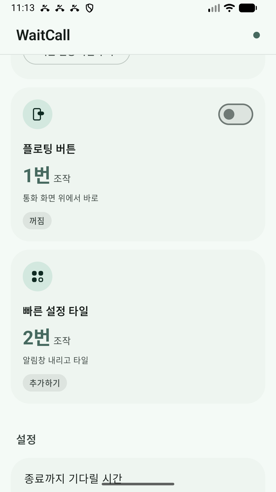
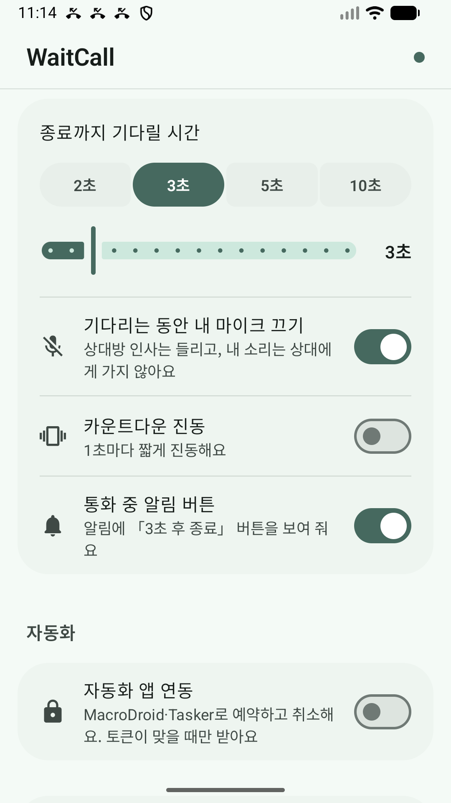

편한 곳에서 누르세요
Use the button that suits you
앱 화면, 알림, 빠른 설정 타일에서 예약해요. 선택 기능인 플로팅 버튼을 켜면 통화 화면 위에서 바로 누를 수 있어요.
Use the app, notification, or Quick Settings tile. Enable the optional floating button for an action right over your call screen.
내 인사를 마치고, 상대방의 인사도 끝까지.
통화 중 한 번 예약하면 원하는 시간만큼 기다렸다가 통화 종료를 요청해요. 기본 전화 앱은 그대로예요.
Finish your goodbye and hear theirs, too. One tap schedules a hangup after the time you choose. Keep using your default phone app.

현재 개발 빌드의 실제 화면 · 대기 상태Actual development build · Waiting for a call
통화가 진행 중일 때만 예약할 수 있어요. 통화 상태가 바뀌거나 확인되지 않으면 예약을 취소해요.
Schedule only during an active call. If call state changes or cannot be verified, the countdown is cancelled.
전화 권한을 허용하고 기다릴 시간을 골라요. 빠른 설정 타일을 추가하면 다음 통화에서 더 편해요.
Allow phone permissions and choose a delay. Add a Quick Settings tile for easier access on your next call.
마지막 인사를 마쳤다면 「3초 후 종료」를 눌러요. 설정한 시간만큼 카운트다운이 시작돼요.
When you've said goodbye, tap “End in 3 seconds.” The countdown uses your chosen delay.
앱에서는 「계속 통화하기」로 취소해요. 타일·알림·플로팅 버튼에서도 예약을 취소할 수 있어요.
Tap “Keep talking” in the app to cancel. You can also cancel from the tile, notification, or floating button.
앱 화면, 알림, 빠른 설정 타일에서 예약해요. 선택 기능인 플로팅 버튼을 켜면 통화 화면 위에서 바로 누를 수 있어요.
Use the app, notification, or Quick Settings tile. Enable the optional floating button for an action right over your call screen.
기본은 3초. 2·3·5·10초 빠른 선택과 1초 단위 슬라이더로 기다릴 시간을 바꿔요.
Start with 3 seconds. Pick a 2, 3, 5, or 10-second preset, or use the slider to choose any delay from 1 to 15 seconds.
카운트다운 동안 내 마이크를 끄거나, 매초 짧은 진동으로 남은 시간을 느낄 수 있어요. 설정에서 각각 바꿔요.
Mute your microphone during the countdown or feel a short vibration each second. Control both options in settings.
MacroDroid·Tasker의 명령으로 예약·취소할 수 있어요. 직접 켠 경우에만 사용하며, 앱에서 만든 토큰이 일치해야 명령을 받아요.
Schedule and cancel with MacroDroid or Tasker commands. Integration stays off until you enable it, and commands need a matching token.
광고 없는 첫 출시를 준비하는 현재 개발 빌드의 실제 화면이에요.
Actual screens from the current development build for the ad-free launch.
플로팅 버튼과 빠른 설정 타일을 준비해요.
Set up a floating button or Quick Settings tile.

지연 시간·마이크·진동·알림을 한곳에서 바꿔요.
Adjust delay, mic muting, vibration, and notifications.

아니요. 기본 전화 앱은 유지해요. WaitCall은 허용받은 권한으로 통화 상태를 확인하고 통화 종료를 시스템에 요청하는 보조 도구예요.
No. WaitCall is a companion utility that checks call state and asks the system to end the call using the permissions you grant.
통화 상태 확인과 통화 종료 권한이 필요해요. 알림과 실시간 알림, 다른 앱 위에 표시 권한은 사용하는 기능에 따라 필요할 수 있어요. 플로팅 버튼은 선택 기능이에요.
Phone-state and call-ending permissions are required. Notifications, live updates, and display-over-other-apps permissions depend on the features you use. The floating button is optional.
기기와 Android 버전, 전화 앱에 따라 종료 동작과 알림 표시가 달라질 수 있어요. 현재 실제 통화에서의 호환성을 검증하고 있어요. 통화 상태가 불확실하면 종료를 진행하지 않아요.
Hangup behavior and notifications can vary by device, Android version, and phone app. Real-call compatibility is still being tested. The app does not hang up when call state is uncertain.
Android 비공개 테스트가 대한민국에서 진행 중이에요. 공통 테스터 그룹에 한 번 가입한 뒤 같은 Google 계정으로 WaitCall 테스트 참여를 선택하고 Play 스토어에서 설치해 주세요. 새 그룹의 Play 연결이 반영되기까지 시간이 걸릴 수 있어요. 기존 sunshore-testers 그룹이나 해당 앱의 기존 테스터 그룹에 가입해 참여 중이라면 다시 가입할 필요가 없어요. 참여 상태를 14일 이상 유지해 주시면 도움이 됩니다. 의견은 hoftlab@gmail.com으로 보내 주세요.
The Android closed test is available in South Korea. Join the shared tester group once, opt in to WaitCall with the same Google account, then install from Google Play. The new group may take time to become available in Play. If you already participate through the existing sunshore-testers group or this app’s previous tester group, you do not need to join again. Please stay opted in for at least 14 days. Send feedback to hoftlab@gmail.com.